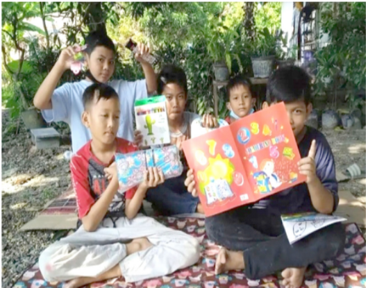
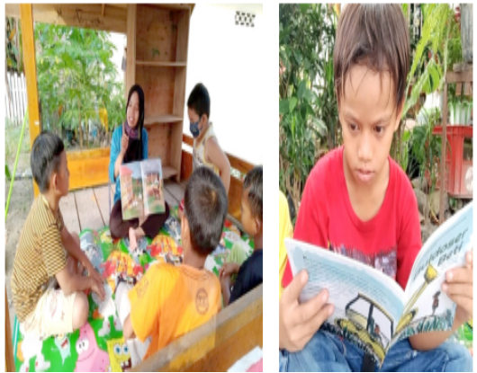

<!doctype html>
<html lang="en">
  <head>
    <!-- Required meta tags -->
    <meta charset="utf-8">
    <meta name="viewport" content="width=device-width, initial-scale=1, shrink-to-fit=no">

    <!-- Bootstrap CSS -->
    <link rel="stylesheet" href="../css/bootstrap.min.css">

    <!-- CSS Kel 12 -->
    <link rel="stylesheet" href="../style.css">
    <link rel="stylesheet" href="../fa/css/all.css">

    <title>Profil Rumah Baca Kakita | Kantor Bahasa Provinsi Jambi</title>
  </head>
  <body id="kel12">
  <!-- Navbar -->
  <nav class="navbar navbar-expand-lg navbar-dark nav-top navbar-shrink nav-side">
    <a class="navbar-brand" href="../index.html"></a>
    <button class="navbar-toggler" type="button" data-toggle="collapse" data-target="#navbarNavAltMarkup" aria-controls="navbarNavAltMarkup" aria-expanded="false" aria-label="Toggle navigation">
      <span class="navbar-toggler-icon"></span>
    </button>
    <div class="collapse navbar-collapse" id="navbarNavAltMarkup">
      <div class="navbar-nav ml-auto">
        <a class="nav-item nav-link" href="../Komunitas.html">Komunitas</a>
      </div>
    </div>
  </div>
  </nav>
<!-- Akhir Navbar -->
  
  <!-- Jumbotron -->
  <div class="jumbotron-side">
      <div class="container">
        <h1 class="display-4">Rumah Baca Kakita</h1>
      </div>
  </div>
  <!-- Akhir Jumbotron -->
  <!-- Konten Profil -->
  <div id ="konten" class="container-fluid">
    <div class="container">
      <div class="row profile">
        <div class="col-md-12">
          <h4 class="judul">Profil</h4>
          <div class="kata-pengantar">
            <figure class="foto-rektor">
            
            <figcaption> Rumah Baca Kakita </figcaption>
            </figure>
            </div>
            <div class="isi-kata-pengantar">
              <p>Alamat : Jalan Pratu Tandu Suwito No 17 A RT 16, Simpang IV Sipin, Telanaipura, Kota Jambi, Jambi </p>
             
              <p>Email: kakitarasyid@gmail.com</p>
                  <p>Telp: 0823-7182-5588</p>
                                 
            </div>
        </div>
      </div>
      <div class="row all" style="margin-top: 100px;">
        <div class="col-md-12">
          <h4 class="Judul">Visi,Misi,Tujuan</h4>
          <div class="visi-misi-tujuan">
            <h1>Visi</h1>
            <p> - </p>
            <h1>Misi</h1>
            <ol>
              <li> - </li>
              <li> - </li>
              <li> - </li>
              <li> - </li>
            </ol>
            <h1>Kegiatan</h1>
            <ol>
              <li> Layanan peminjaman buku </li>
              <li> Bimbingan belajar membaca </li>
              <li> Klub sains cilik</li>
              <li> Wisata Eko-EduLiterasi</li>
              <li> Kreasi sobat Kakita </li>
            
            </ol>
            
          </div>
        </div>
      </div>
      <a class="btn tombol show-more">Tampil Banyak</a>
      <div class="row all" style="margin-top: 100px;">
      <div class="col-md-12">
        <h4 class="Judul">Sejarah</h4>
        
        <div class="isi-sejarah">
          <p> “Tahun ini kamu tetap di kelas satu, ya!” seru wanita berseragam.
            “Tinggal kelas?” ia membantin.
            Gadis kecil itu terdiam, matanya mulai berkaca-kaca dan tangis 
            pun pecah. Ia ingin segera pulang, bersembunyi di balik pintu 
            kamar.  </p>
          <p>Bagi sebagian anak, tinggal kelas menjadi peristiwa yang 
            tak terlupakan. Seluruh teman tahu dan menjadikannya bahan 
            perundungan di sekolah dan di rumah. Malu bukan kepalang, 
            tinggal kelas karena tak bisa membaca dan mesti mengulang 
            satu tahun pelajaran di kelas yang sama. Sejak itu, ia mulai 
            mengeja huruf, membaca, membaca, dan membaca. Ia sadar 
            betapa pentingnya kemampuan membaca atau literasi dalam 
            kehidupannya. Berawal dari pengalaman yang kurang menyenangkan, ia berharap tidak ada anak-anak yang mengabaikan pentingnya literasi dan tak merasakan apa yang pernah ia 
            alami. </p>
          <p>Kegiatan Rumah Baca Kakita sempat terhenti karena imbas 
            pandemi. Geliat Rumah Baca Kakita berangsur-angsur mulai 
            kembali normal. Pengelola mulai merangkul masyarakat di 
            lingkungan terdekat. Hati ngilu mengetahui sebagian anak-anak 
            di sekitar Rumah Baca Kakita tidak tahu karakter Bobo, Nirmala, 
            Bona, dan Rongrong di majalah anak. Mereka juga menyampaikan belum pernah masuk ke toko buku, Perpustakaan Provinsi, 
            ataupun Perpustakaan Kota Jambi, padahal mereka tinggal di kawasan Telanaipura yang dekat dengan pusat pemerintahan 
            provinsi. Beberapa universitas ternama berdiri kukuh di kawasan Telanai. Jarak rumah mereka dengan Perpustakaan Provinsi 
            Jambi hanya sepelemparan batu. Wajahnya tertampar melihat 
            kondisi yang memprihatinkan. Bagaimana mungkin aktif berliterasi, tetapi belum mampu menyentuh orang-orang terdekat?</p>
          <p>Semua bermula pada sebuah tantangan yang diberikan oleh 
            Bu Yanti (pengelola Rumah Baca Evergreen) kepada Masyithah 
            untuk mendirikan rumah baca di lingkungan tempat tinggalnya. 
            Sejujurnya tantangan atau permintaan tersebut teramat berat 
            untuk diterima apalagi kalau ditolak. Pergolakan batin terjadi 
            selama berbulan-bulan untuk memantapkan hati dalam mendirikan rumah baca. Kekhawatiran diri acap kali memenuhi 
            pikirannya. Sebuah pesan dari Bu Yanti selalu terngiang-ngiang, 
            “Kini saatnya mengepakkan sayap untuk memperluas kebermanfaatan dalam literasi.”</p>
          <p>Semua bermula pada sebuah tantangan yang diberikan oleh 
            Bu Yanti (pengelola Rumah Baca Evergreen) kepada Masyithah 
            untuk mendirikan rumah baca di lingkungan tempat tinggalnya. 
            Sejujurnya tantangan atau permintaan tersebut teramat berat 
            untuk diterima apalagi kalau ditolak. Pergolakan batin terjadi 
            selama berbulan-bulan untuk memantapkan hati dalam mendirikan rumah baca. Kekhawatiran diri acap kali memenuhi 
            pikirannya. Sebuah pesan dari Bu Yanti selalu terngiang-ngiang, 
            “Kini saatnya mengepakkan sayap untuk memperluas kebermanfaatan dalam literasi.”</p>
          
          </div>
        </div>
      </div>
      <a id="" class="btn tombol show-more">Tampil Banyak</a>
    </div>
  </div>
  <!-- Akhir Konten Profil -->
  
<!-- Footer -->

<footer>
  <div class="footer-body">
    <div class="container">
      <div class="row">
        <div class="col-md-4 col-sm-6">
          
          <div class="alamat">
            <h6>KANTOR BAHASA PROVINSI JAMBI</h6>
            <p>Jl. Arif Rahman Hakim No.101, Simpang IV Sipin, Kec. Telanaipura, Kota Jambi, Jambi </p>
            <p>(0741) 669466</p>
            <p>Kodepos: 36361</p>
            <p>Posel: bahasajambi@kemdikbud.go.id</p>
          </div>
        </div>
      </div>
    </div>
  </div>
  <div class="footer-bottom">
    <div class="container">
      <div class="row">
        <div class="col-md-9">
          <p class="copyright">© Kantor Bahasa Provinsi Jambi</p>
        </div>
      </div>
    </div>
  </div>
</footer>
<!-- Akhir Footer -->
  
  
    <!-- Optional JavaScript -->
    <!-- jQuery first, then Popper.js, then Bootstrap JS -->
    <script src="https://code.jquery.com/jquery-3.3.1.slim.min.js" integrity="sha384-q8i/X+965DzO0rT7abK41JStQIAqVgRVzpbzo5smXKp4YfRvH+8abtTE1Pi6jizo" crossorigin="anonymous"></script>
    <script src="https://cdnjs.cloudflare.com/ajax/libs/popper.js/1.14.3/umd/popper.min.js" integrity="sha384-ZMP7rVo3mIykV+2+9J3UJ46jBk0WLaUAdn689aCwoqbBJiSnjAK/l8WvCWPIPm49" crossorigin="anonymous"></script>
    <script src="https://stackpath.bootstrapcdn.com/bootstrap/4.1.3/js/bootstrap.min.js" integrity="sha384-ChfqqxuZUCnJSK3+MXmPNIyE6ZbWh2IMqE241rYiqJxyMiZ6OW/JmZQ5stwEULTy" crossorigin="anonymous"></script>
    <script>

    var contents = document.getElementsByClassName("all");
    var buttons = document.getElementsByClassName("show-more");

    for (var i = 0; i < contents.length; i++) {
      // "let" creates locally scoped variables for use in the function.
      let content = contents[i];
      let button = buttons[i];
      button.onclick = function() {
        if (content.className == "open") {
          //shrink the box
          content.className = "all";
          button.innerHTML = "Show More";
        } else {
          //expand the box
          content.className = "open";
          button.innerHTML = "Show Less";
        }
      };
    }
    </script>
  </body>
</html>